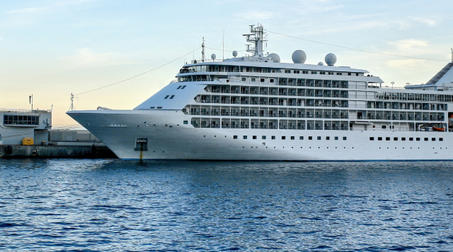

Big infrastructures are situated along the shore line and in the most of cases they don`t have sufficient access to fresh water. So this product has an extremely large field of application.

Products
Where it is working
As main part of a seawater RO

As main part of a seawater RO
APPR pamps are well used as part of any seawater revevers osmosis. Due to their low energy consumption, compact size and reliability they became main part of seater desalination plant.
Hotels
Hotels
With Aqua-Life desalination systems any hotel placed near the sea line will use advantages of the autonomic source of fresh water of excellent quality.
Houses
Houses
The desalination plant Aqua-life is perfect for both a detached building and a cottage town. We can always combine several modules into one to increase the productivity of the desalination plant.
Sea vessels

Sea vessels
The presence of the Aqua - Life desalination plant on board completely solves the problem of lack of fresh and potable water. You don't need to have a large fresh water storage facility if you have a high-capacity reverse osmosis plant.
Agriculture

Agriculture
Agriculture is mainly dependent on access to fresh water, and a low energy desalination plant will help you organize an agricultural business in the maritime region.